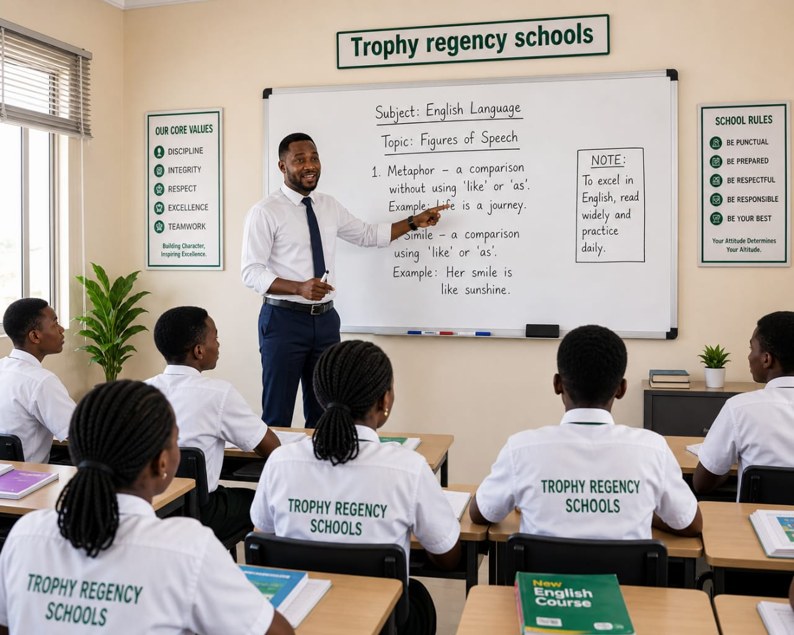

Welcome To
Trophy Regency School
About Us
Founded in the year 2017, Trophy Regency School is a prestigious educational institution dedicated
to providing
high-quality education and fostering a nurturing learning environment. Our school is committed to
academic
excellence, character development, and holistic growth of our students. We offer a comprehensive
curriculum
that includes a wide range of subjects, extracurricular activities, and opportunities for personal
development. Our experienced faculty members are passionate about teaching and are dedicated to
helping
students reach their full potential. At Trophy Regency School, we strive to create a supportive
community where students can thrive academically, socially, and emotionally.
We believe in fostering a love for learning and encouraging creativity, critical thinking, and
collaboration among our students.We also prioritize the well-being of our students and provide a
safe
and inclusive
environment where they can grow and develop into responsible global citizens. At Trophy Regency
School,
we are committed to nurturing the talents and aspirations of our students and preparing them for a
successful future.
We are located at No.1 Jesu Oseun Street. For more information about our school,contact us at

Why Choose Us
At Trophy Regency School, we are committed to providing a nurturing and inspiring learning environment where every child is valued. Our experienced teachers focus on both academic excellence and personal development, ensuring students are well-prepared for the future. We combine modern teaching methods with strong moral values to help learners grow in confidence, discipline, and creativity. With safe facilities, supportive staff, and a focus on success, we give every student the opportunity to achieve their full potential.
Creche
Nursery
Primary
Secondary
Creche
The creche class is the foundation level of early childhood education. At this stage,
the focus
is on creating a
safe, warm,and nurturing environment where children
feel comfortable and secure away from
home.
In the creche class, learning takes place through play, interaction,
and exploration. Children
are
introduced to basic social skills such as sharing, cooperation,
and communication. Simple
activities
like singing, storytelling, coloring, and playing
with toys help to develop their motor skills,
language, and creativity.
The creche also helps children begin to build independence and confidence while preparing
them
for
higher classes such as nursery and kindergarten.
Caring teachers provide close attention to
each
child’s emotional and physical needs,
ensuring a smooth transition from home to school life.

Events
Cultural Day
Our annual cultural day celebrates diversity and promotes understanding among students from different backgrounds.
Sports Day
Our sports day promotes physical fitness and teamwork through various athletic competitions and activities,Takes place on every Wednesday of the week.
End Of Year Party
Our end-of-year party is a celebration of the students' achievements and a way to thank them for their hard work throughout the year.
Debates
Our debate competitions encourage critical thinking and public speaking skills among students.
Fruit Day
Our fruit day promotes healthy eating habits and educates students about the benefits of consuming fresh fruits.